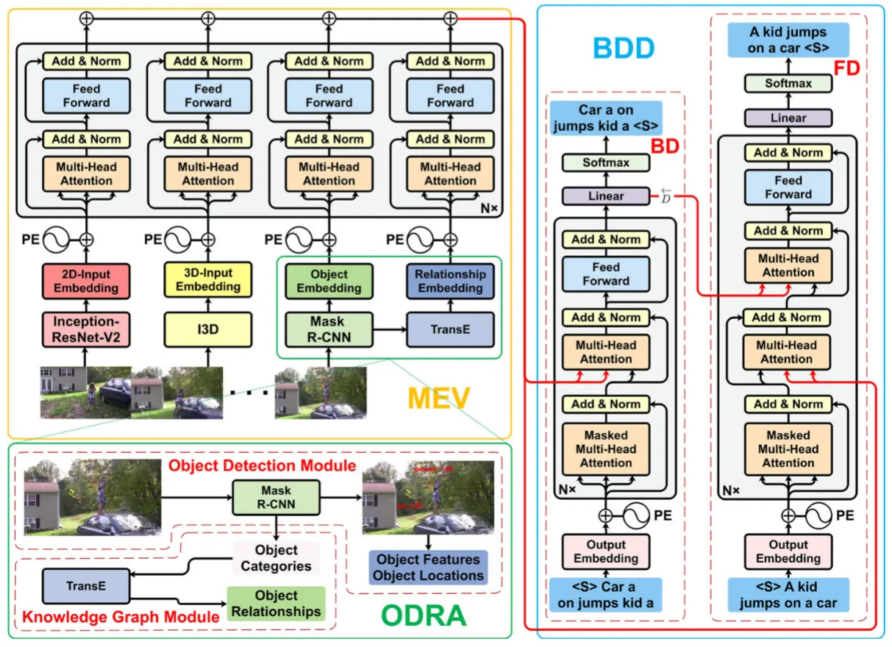
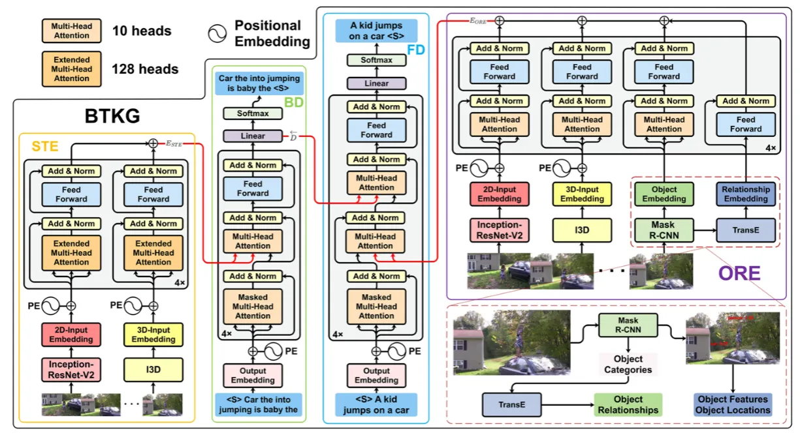

资源
- Multimodal-enhanced hierarchical attention network for video captioning | Multimedia Systems (springer.com)
- Bidirectional transformer with knowledge graph for video captioning | Multimedia Tools and Applications (springer.com)
- B 站-水论文的程序猿的主页 - 博客园 (cnblogs.com)
- 水论文的程序猿的个人空间-水论文的程序猿个人主页-哔哩哔哩视频 (bilibili.com)
正文
Bidirectional transformer with knowledge graph for video captioning
Abstract
基于 Transformer 架构的模型已经在视频字幕中崭露头角。然而，大多数模型只是改进编码器或解码器，因为当我们同时改进编码器和解码器时，任何一方的缺点都可能被放大。基于 Transformer 架构，我们连接了一个双向解码器和一个编码器，它集成了细粒度的时空特征，对象，以及视频中对象之间的关系。实验表明，编码器的改进放大了双向解码器的信息泄漏，并进一步产生更差的结果。为了解决这个问题，我们产生伪反向字幕，并提出了一个双向 Transformer 与知识图（BTKG），它集成了两个编码器的输出到双向解码器的前向和后向解码器，分别。此外，我们根据视频的四个模态特征对不同编码器的内部进行了细粒度的改进。在两个主流基准数据集上的实验，即，MSVD 和 MSR-VTT 证明了 BTKG 的有效性，它在重要指标上达到了最先进的性能。**此外，**BTKG 生成的句子中含有场景词和修饰语，更符合人类的语言习惯。代码可在 https://github.com/nickchen121/BTKG 上找到。
Keywords Video captioning · Bidirectional transformer · Knowledge graph · Multimodal of video
1 Introduction
视频字幕的任务旨在理解视频中的场景，并用合理的句子对其进行描述。它可以广泛应用于视频检索、视频推荐、残疾人支持和场景理解。随着深度学习的快速发展，基于编码器-解码器的神经字幕方法在视频字幕中越来越突出。特别是随着 Transformer 的出现，基于 Transformer 架构的模型成功地推进了现状。然而，上述模型只改进了编码器或解码器，例如，通过将视频中的对象和对象之间的关系集成到编码器中，通过将音频、图像和视频的运动特征融合到编码器中，以及通过采用双向解码器。因此，同时改进 Transformer 的编码器和解码器的动机是自然的，例如，解码器通过双向解码器生成更高精度的字幕，同时将视频的更多模态特征融合到编码器中。
如图 1 的 MEV 所示，Zhang 等人使用最先进的 2-D CNN 和 3D CNN 在大型数据集上预训练来提取视觉时空特征。他们还获得了基于对象检测器 Mask R-CNN 和知识图模型 TransE 提取的对象之间的关系。现有的单向解码器从左到右逐个标记地生成目标语言序列，**并且它们不能充分利用目标侧未来上下文，其可以在从右到左的解码方向上产生。**因此，Wang 等人提出了一种双向解码器来解决上述问题。如图 1 的 BDD 所示，双向解码器由前向解码器（FD）和后向解码器（BD）组成，因为前向解码器接受由后向解码器生成的反向字幕，所以前向解码器可以考虑先前生成的输出和来自后向解码器的地面实况字幕的后续字。
{kind=link}

Fig.1 该图说明了基于 Transformer 架构的多模式视频编码器（MEV）和双向解码器（BDD）之间的直接连接，其中 PE 是位置编码。Oscillation 是知识图模块和对象检测模块之间的组合，其中 Mask R-CNN 和 TransE 分别表示对象检测器和知识图模型
然而，双向解码器存在信息泄漏的问题。泄漏是在训练阶段，前向解码器间接利用反向地面真值字幕，这是后向解码器的输入。相反，正向解码器在测试阶段采用反向解码器生成的反向字幕。因此，如果反向解码器生成更高质量的反向字幕，则相当于正向解码器在测试阶段使用更接近反向地面真实字幕的字幕，即只要反向解码器的性能越出色，泄漏对双向解码器的负面影响就越小。如图 1 的 ODRA 所示，我们从对象检测器 Mask R-CNN 中获取对象（“car”、“people”）。由于对象是由一系列孤立的实体组成的，并且上下文之间没有逆序概念，因此我们反转它们是不太明智的。从知识图模型 TransE 获得的关系也是如此。因此，如果我们将对象和关系集成到反向解码器中，生成反向字幕的质量可能会降低，并进一步扩大泄漏。如图 1 所示。当我们直接连接一个双向解码器和一个融合对象和关系的编码器时，实验表明它确实放大了泄漏。
{kind=link}

该图详细说明了我们提出的基于 Transformer 架构的 BTKG，其由时空编码器（STE）、对象和关系编码器（ORE）、后向解码器（BD）和前向解码器（FD）组成。在训练时，给定一段视频，通过 STE 得到视频的细粒度时空特征。然后，我们将 $E_{STE}$ 输入 BD 以获取反向预测字幕 $Y_{BD}$ 和 $Y_{BD}$ 的上下文 $\overleftarrow{D}$。同时，为了获取视频编码 $E_{ORE}$，视频的粗粒度时空特征、通过对象检测器 Mask R-CNN 获得的对象以及基于知识图模型 TansE 提取的对象之间的关系由 ORE 联合编码。最后，将 EORE 与 $\overleftarrow{D}$ 一起集成到 FD 中，以获得前向预测字幕 $Y_{FD}$
**因此，我们提出了一个双向 Transformer 与知识图（BTKG），以减轻泄漏。**在图 2 中，我们分别为双向解码器的前向解码器和后向解码器中的每一个分配一个编码器，这与仅具有一个编码器和解码器的常规模型不同。由于集成对象和关系的编码器可能降低反向字幕的生成质量，如图 2 的 STE 所示，我们为连接到反向解码器的编码器去除对象和关系。此外，我们通过利用视频具有多个不同字幕的特性来生成伪反向字幕以减少泄漏。
**此外，不同于传统的编码器的 Transformer 的顺序文本，我们的编码器的输入是帧，对象，和关系的视频。**因此，如图 2 所示，我们根据视频的各种模态采用不同的编码器。由于视频中的帧比文本中的单词具有更紧密的相关性，因此我们首先通过 STE 中的扩展和多头注意力层捕获比帧更小的视频片段之间的相关性。其次，每个关系都是独立的，因此不需要使用注意层来捕获它们之间的相关性。最后，由于对象和关系都不是按上下文排序的，因此都没有使用位置编码。
主要贡献归纳为以下四个方面：
- 为了在将视频中的对象和对象之间的关系集成到编码器中时利用双向解码器，我们提出了具有知识图的双向 Transformer（BTKG）。它允许两个不同的编码器分别连接前向和后向解码器。
- 我们的编码器的输入是视频的模态特征，这与用于顺序文本的 Transformer 不同。因此，我们根据不同的模态特征对编码器进行了改进。
- 为了减少双向解码器的信息泄漏，我们产生伪反向字幕。此外，扩展的多头注意层间接提高了编码器和后向解码器的性能，并进一步减少了泄漏。
- 我们在两个数据集 MSVD 和 MSR-VTT 上评 估 BTKG。特别是，我们的 B TKG 实现了最先进的性能，并在 CIDEr-D 中大幅优于亚军方法，CIDEr-D 是专门为字幕任务设计的。此外，BTKG 生成的句子中含有场景词和修饰语，更符合人类的语言习惯。
**本文的其余部分组织如下。**我们首先在第 2 节讨论视频字幕的相关工作。其次，在第 3 节中详细描述了具有知识图的双向 Transformer（BTKG）。然后，我们分别在第 4 节和第 5 节中给出实验结果和分析。最后，我们在第 6 章对本文进行了总结。
2 Related work
在本节中，我们将从 1）视频字幕，2）多模式编码，3）字幕生成和 4）摘要描述相关工作。
2.1 Video captioning
**最近，用自然语言为短视频添加字幕对机器来说是一个挑战。随着深度学习的快速发展，Donahue 等人率先采用深度神经网络来解决视频字幕问题。后来，许多基于编码器-解码器架构的视频字幕方法崭露头角。这些方法通过卷积神经网络（CNN）对视频进行编码，并使用长短期记忆（LSTM）生成视频字幕。**Venugopalan 等人是首批使用编码器-解码器框架的作品之一，其中字幕由 LSTM 生成，视觉特征由 CNN 提取。随着注意力机制和 Transformer 的出现，Zhou 等人还提出了一种 Transformer 方法，利用注意力机制生成连贯的字幕。Zhong 等人提出了一种基于双向解码变换器的三层分层注意力网络，该网络增强了多模态特征。
2.2 Multimodal extraction
**为了充分利用视频的时间结构，在视频编码中利用多模态也引起了人们的极大关注。**例如，Song 等人通过分层注意机制扩展了隐式区分视觉和非视觉单词的重要性。特别是，Aafaq 等人利用在大型数据集上预训练的最先进的 2-D CNN 和 3-D CNN（C3D）来提取视觉时空特征。随着计算机视觉中对象检测的成功，自下而上的注意力算法应用对象检测来提取区域特征，显着提高了视频字幕性能。Yan 等人通过对象检测器提取保持更准确对象信息的局部特征。Zhang 等人分别利用对象检测和知识图来提取视频中的对象以及对象之间的关系，然后将它们与视频的时空特征融合，以细化对象之间的细粒度动作。Zhou 等人提出了一种新的 MATNet，引入了一种新的方法来学习使用交织编码器的丰富时空对象表示，这鼓励以分层方式从运动到外观的知识传播。
2.3 Captions generation
**近年来，许多研究在字幕生成方面也取得了一定的成果。**Liu 等人通过将鲁棒控制信号注入所选对象来解决可控视频的字幕问题。为了修正单词和语法错误，Xu 等人提出了 DRPN 来改进字幕候选项。为了从视频中捕捉更多的视觉基础细节，Yang 等人设计了一种特殊的解码算法来实现粗到细，而不是逐字的字幕过程。Transformer 的解码器是一个自回归解码器，它只考虑当前生成的单词。Wang 等人提出了一种利用上下文生成字幕的双向解码模型。
2.4 Summary
**如上所述，上述方法几乎只改进了编码器或解码器。实验表明，直接叠加基于[7]和[8]的编码器和解码器可能会产生更差的结果。受这些工作的启发，我们提出了基于 Transformer 架构的 BTKG，以有效地融合改进的编码器和解码器。**我们的编码器的输入是视频中的帧、对象和关系，这与用于顺序文本的 Transformer 不同。在此基础上，我们根据视频的各种模态特征对编码器进行了改进。
3 Approach
在本节中，我们首先简要介绍了我们的方法所使用的基本模块，然后描述了该方法的细节。
3.1 Basic module
从 Transformer 的体系结构和所使用的多模态特征提取和字幕生成的基本模块。
3.1.1 Transformer architecture
Transformer 架构由编码器和解码器组成，它们由相同层的堆栈组成。每一层包含由多头注意（MHA）和前馈网络（FFN）构造的子层。同时，在两个子层中的每一个周围存在残余连接，然后进行层归一化。
MHA 子层允许模型共同关注来自不同位置的不同表示子空间的信息，并由 个相同的头组成。每个 利用 、、 作为其输入。MHA 计算如下：
\text{where}\ head_i=\text{Attention}(QW_i^Q,KW_i^K,VW_i^V)$$ 其中 $W^Q_i$、$W^K_i$、$W^V_i$ 是学习参数，并且 $W^O$ 是学习投影矩阵。$\text{Attention}()$ 被称为“标度点积注意力”。它可以被描述为将查询和一组键值对映射到输出： $$\text{Attention}(Q_i,K_i,V_i)=\text{softmax}(\frac{Q_iK_i^T}{\sqrt{d_k}})V_i,$$ 其中 $E_i =\frac{Qi K^T_i}{\sqrt{d_k}}$ 表示 $N\times N$ 注意力分数矩阵 $E_i$，其元素 $e^{mn}_i$ 是第 $i$ 个子空间中第 $m$ 个和第 $n$ 个标记之间的注意力分数。 FFN 子层由两个线性转换组成，其间有一个 ReLU 激活： $$FFN(X)=max(0,XW_1+b1)W_2+b_2,$$ 其中 $W_{1} \in \mathbb{R}^{d\times d_{f}},W_{2} \in \mathbb{R}^{d_{f}\times d},b_{1} \in \mathbb{R}^{d_{f}},b_{2} \in \mathbb{R}^{d}$ 是学习参数，$d_{k}\times h$。 ##### 3.1.2 Multimodal features extraction and captions generation 图像和运动特征在视频多模态特征提取中有着广泛的应用。图像特征通常用于表示图像中的颜色和形状，而运动特征对于捕获视频中的时空运动动态是必不可少的。我们使用在 ImageNet 上预训练的 Inception-ResNet-V2 来提取图像特征，并使用在 Kinetics 上预训练的 I3D 来提取运动特征。此外，视频中的对象与图片中的对象相比具有动态行为，并且它们之间存在关系链接。我们首先利用对象检测器 MaskR-CNN 来提取语义对象（如人、建筑物、汽车），然后通过知识图模型 TransE 获取对象之间的关系，它基于知识表示学习框架 OpenKE。对于字幕生成，我们的方法适应于双向解码器，该解码器由一个后向解码器和一个前向解码器组成。 #### 3.2 Bidirectional transformer with knowledge graph (BTKG) 如上所述，**我们的双向 Transformer with Knowledge Graph（BTKG）将 Wang 提出的双向解码器与 Zhang 提出的编码器相结合，该编码器集成了视频中的对象以及对象之间的关系。**如图 2 所示，BTKG 由四部分组成：给定视频，**STE（Spatio-Temporal Encoder）**利用扩展的多头注意层获得视频的细粒度视频时空编码 $E_{STE}$，**ORE（Objects and Relationships Encoder）**首先通过对象检测器 Mask R-CNN 提取视频中的对象，并通过知识图模型 TransE 获取对象之间的关系，然后对这些对象、关系和粗粒度时空特征进行联合编码，得到$E_{ORE}$，**后向解码器（BD）**生成反向预测字幕 $Y_{BD}$ 和 $Y_{BD}$ 的上下文 $\overleftarrow{D}$，**前向解码器（FD）**采用 $E_{ORE}$ 和 $\overleftarrow{D}$ 进行前向解码，得到前向预测字幕 $Y_{FD}$。每个组件的详细信息在以下小节中描述。 ##### 3.2.1 Spatio-temporal encoder (STE) 时空编码器（STE）被期望编码细粒度的视频时空特征。给定一个长度为 L 的视频帧序列 $X =\{x_1,...,x_L\}$，我们首先利用 ImageNet 上预训练的 Inception-ResNet-V2 来提取图像特征 $F_I=\{f_1,\cdots,f_L\}$，其中 $f_i\in\mathbb{R}^{d_I}$，并利用 Kinetics 上预训练的 I3D 来提取运动特征 $F_M=\{v_1,\cdots,v_N\}$，其中 $v_i\in\mathbb{R}^{d_M}$，$N = L/64$。图像和运动特征的维度分别由 $d_I$ 和 $d_M$ 表示。然后我们对图像和运动特征进行线性变化，将它们的维度映射为 $d_{model}$，计算公式为： **……（算了后面也看不懂）** ### 4 Experiments 在这一节中，我们首先描述了四个实验设置：数据集，特征提取，评估，和参数设置，然后介绍我们的方法的性能比较。 #### 4.1 Experimental settings ##### 4.1.1 Datasets 使用两个最流行的基准数据集进行各种实验，以证明我们提出的 BTKG 的有效性，这两个数据集是 Microsoft Research 视频字幕语料库（MSVD）和 Microsoft Research 视频到文本（MSR-VTT）。 **MSVD** 包含 1970 个 10 秒至 25 秒的 YouTube 短视频片段和大约 80000 个英语句子。每一个视频片段描述一个活动，并有大约 40 个英文字幕。我们遵循之前作品中的分割设置，分别为训练，验证和测试集生成 1200，100 和 670 个视频。 **MSR-VTT** 它由 10000 个视频剪辑组成，每个视频剪辑都有 20 个标题和一个类别标签，由来自 Amazon Mechanical Turk 的 1327 名工作人员注释。与[40]一样，训练集、验证集和测试集分别有 6513497 和 2990 个视频。 ##### 4.1.2 Feature extraction **我们分别以每秒 5 帧和每秒 3 帧的速度对 MSVD 和 MSR-VTT 的视频进行采样。**然后将采样结果输入 Inception-ResNet-V2 进行图像特征提取，并分别以 25 帧/秒和 15 帧/秒的速率对 MSVD 和 MSR-VTT 的视频进行重采样。最后，我们将采样结果输入 I3D 中，以获得从 64 个重叠的连续帧中提取的运动特征，并且用于提取运动特征的间隔被设置为 5 帧。图像和运动特征的维度分别为 2048-D 和 1024-D。此外，我们还使用辅助视频类别标签的 GLOVE 向量来促进特征编码。我们分别从 MSVD 和 MSR-VTT 中以相等的间隔提取 50 帧和 60 帧的视觉特征。在本文中，这两个特征都被投影到 $d_h = 512$。 ##### 4.1.3 Evaluation metrics **我们使用标准的自动评估指标来测试模型的性能，包括 BLEU，METEOR，CIDER-D 和 ROUGE-L。**BLEU 和 METEOR 最初是为机器翻译评估而设计的，通常用于量化机器生成文本的质量。CIDEr-D 是最近引入的图像字幕任务的评估指标，明确设计用于评估字幕系统，而 ROUGE-L 用于评估 2004 年提出的提取的文本摘要。 ##### 4.1.4 Parameter settings 为了获得对象和对象之间的关系，MaskRCNN 的置信度为 0.7，其最小检测尺寸为 224×224。同时，我们利用 613 个非重复的三元组作为 TransE 的数据集，然后使用 300 维 GLOVE 向量来表示关系。我们采用 4 层，640 个字嵌入维度，512 个模型维度，2048 个隐藏维度，每层 10 个注意力头用于上述编码器和解码器。然而，对于 STE 中的有参与和多头注意层，我们将头的数量设置为 128。在训练期间，用于平衡两个解码器之间的偏好的超参数 $\lambda$ 被设置为 0.6，并且训练的时期对于 MSVD 和 MSR-VTT 分别为 30 和 16。同时，我们使用 Adam 优化器，批量大小为 32，MSVD 和 MSR-VTT 的学习率分别为 1e-4 和 3e-5。为了生成更好的字幕，我们利用尺寸为 5 的波束搜索，丢弃率为 0.1。所有实验均在 RTX 3060 GPU 上运行。 #### 4.2 Performance comparison 我们提出的 BTKG 的性能将与以下最先进的方法进行比较：RecNet，PickNet，NACF，STAT，DRPN，ORG-TRL，SGN，O2 NA，MGRMP，GSB + CoSB，TVRD+OAG。除非另有说明，否则我们直接报告原始论文的结果。MSVD 和 MSR-VTT 数据集的测试结果如表 1 所示，**BTKG 在这两个数据集上都上级大多数最先进的方法。** 值得注意的是，我们的 BTKG 在 CIDEr-D 上实现了显著的改进，CIDEr-D 是专门为字幕任务设计的，例如，MSVD 较 TVRD+OAG 相对改善 6.1%，MSR-VTT 较 NACF 相对改善 6.9%。然而，我们的模型在 BLEU 上的表现并不好，因为 BLEU 是专门为机器翻译和基于单词级别的匹配而设计的。Sulem 等人发现 BLEU 与涉及句子分裂的语法性和意义保留参数之间的相关性很低或没有相关性，Novicoca 等人的研究表明 BLEU 与人类判断不太一致，而 CIDEr-D 更符合人类的写作习惯。因此，CIDEr-D 和 BLEU 很难显著改善相同的模型，例如，DRPN 和 ORG-TRL 的 BLEU4 分别在 MSVD 和 MSR-VTT 中最高，而 CIDEr-D 不是最高。ROUGE 和 METEOR 是 BLEU 的改进，其中 ROUGE 关注的是召回率而不是准确率，METEOR 考虑同义词和比较词的词干（因此“running”和“run”被视为匹配），并明确用于比较句子而不是语料。由于我们的 BTKG 通过扩展注意力和多头注意力生成优雅的句子，充分捕捉了视频的细粒度时空特征，因此在这两个分数中表现良好。 综上所述，在 METEOR、ROUGE 和 CIDER-D 上的出色表现表明，我们的 BTKG 不仅分别通过对象检测和知识图从视频中获得了更多的关键对象和对象之间的关系知识，而且由于双向解码器在生成字幕时考虑了上下文，因此保持了人类的语言习惯。**在第 5.2 节中，我们还将通过可视化的示例讨论这一优势。** **（需要花一定的笔墨分析实验性能）** ### 5 Analysis 在本节中，我们从不同方面分析了基准 MSR-VTT 数据集，以更好地理解我们的方法。具体来说，我们首先进行了定量分析，并介绍了案例研究。 #### 5.1 Quantitative analysis 我们首先研究的可行性：一个双向解码器和编码器，集成细粒度的时空特征，对象，并在视频中的对象之间的关系，通过进行消融研究。然后，我们将讨论如下五个比较实验： - 扩展和多头注意层的头数的影响； - 分别用于对对象和关系进行编码的头部数量的影响； - 位置编码分别对对象和关系编码器的影响； - 超参数 $\lambda$ 的影响； - 扩展和多头注意力对 ORE 的影响。 ##### 5.1.1 Ablation study 为了评估我们提出 的 BTKG 的有效性，表 2 显示，当我们直接连接 KGVideo 和 BiTransformer 时，KGVideo + BiTransformer 的性能最差，表明它们相互伤害而不是共同提高整体性能，例如，KGVideo 放大了 BiTransformer 的信息泄漏，导致连接后的结果更差。然而，据观察，我们的 BTKG 超过 KGVideo 和 BiTransformer 在大多数指标，这表明我们的模型成功地利用了视频中的对象和关系，并通过双向解码器生成更准确的字幕。 #### 5.2 Case study 由 BTKG 提供。因此，在图 3 中，我们列出了 BiTransformer、KGVideo、BTKG 和人工注释（地面实况）生成的字幕的几个可视化示例，以分析和验证性能比较中所做的总结。**（可视化分析）**  <p style="text-align: center;">由 BiTransformer，KGVideo，我们提出的 BTKG 和人类注释（Ground Truth）生成的字幕的可视化示例，其中前三个和后三个分别来自 MSR-VTT 和 MSVD</p> 在图 3 的 No.1 和 No.2 视频中，KGVideo 和 BTKG 都获取视频中的谓词中的对象（例如，“彼此”、“另一个人”、“一道菜”）。然而，BiTransformer 只在主题中获得了对象“人”，甚至在第一个视频中使用了错误的词“电影”。另外，由于融合了知识图模型，该模型能够更准确地描述对象之间的关系。例如，在第 3 号和第 4 号视频中，KGVideo 和 BTKG 使用了“solving”和“mixing”这两个关系词，甚至在第 3 号视频中，BTKG 也使用了“正在展示如何求解”通过公式来求解视频中的魔方，而 BiTransformer 仅使用“playing”和“cooking”两个抽象动词来概括对象之间的关系。最后，我们的 BTKG 采用了一个编码器，结合了细粒度的时空特征，对象，以及对象之间的关系，在视频中，同时使用双向解码器。生成的句子更符合人类的语言习惯，在描述视频时加入场景词（“在厨房里”，“在碗里”，“到她的脸上”）来修饰句子。即使在 No.6 中，只有我们的 BTKG 识别“跳过汽车”的行为，而其他两个模型使用抽象和不准确的动词“跑步”和“步行”。 由于我们的模型生成的场景词更多，BTKG 生成的字幕更符合人类的语言习惯。即使在 1 号中，一个修饰语“穿着黑色衬衫”也是合理的，但它没有出现在地面真理中。这进一步解释了为什么在性能比较中，我们的 BTKG 具有较高的 CIDEr-D 和较小的 BLEU 增加。 ### 6 Conclusion 在本文中，我们提出了 BTKG，它同时增强了 Transformer 的编码器和解码器。在编码器中，我们不仅利用了图像、运动和对象等常见的视频特征，在编码过程中针对它们各自的属性进行了细粒度的改进，而且还引入了一个知识图来提取视频中对象之间的关系特征。由于 Transformer 解码器是自回归的，其中每个字的生成取决于之前的输出，因此在解码器中，我们采用双向解码器来在生成每个字时考虑上下文。此外，由于双向解码器中的信息泄漏问题，将对象和关系特征并入编码器中加剧了该问题，导致模型性能的降低。因此，我们通过产生伪反转字幕和使用双编码器来减轻泄漏问题。在 MSVD 和 MSR-VTT 数据集上的实验结果表明，该算法在多个重要度量指标上均取得了较好的性能。而且，BTKG 生成的句子中包含场景词和修饰语，更符合人类的语言习惯。